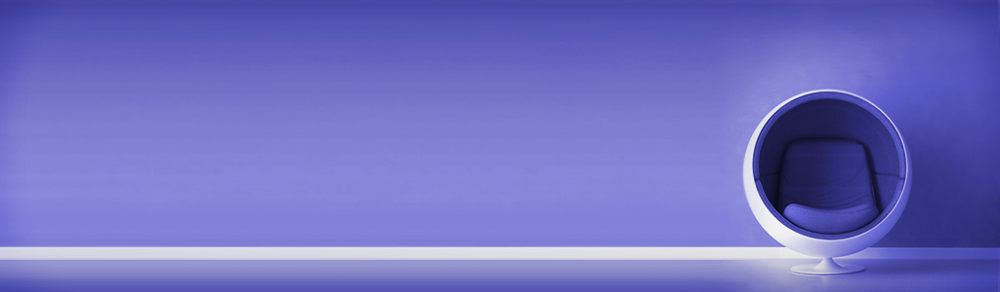

Work Hard, Sit Easy
Struggling to maintain good posture? Learn from an ergonomic expert how the right chair can help you find more energy and comfort.
Complete Your Workspace
Your workspace should be a place you feel supported, focused and inspired. From our latest sit-stand desks to clean Scandi-inspired designs - we have a desk to suit everyone.

The geometry of the Golden Gate Bridge suspension system can be seen in the airiness of the Sayl Chair’s signature back. This modern office chair features an innovative Y-Tower armature and a ventilated elastomer back that flexes with each sitter.